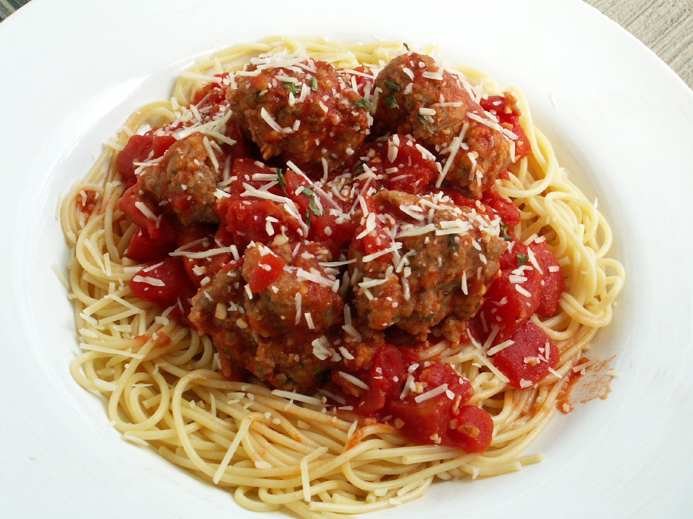

Home
Spaghetti & Meatballs

Description
Spaghetti & meatballs is a quick and easy meal that just about anyone can make.
Ingredient amounts should be adjusted to fit your needs.
Ingredients
- 150g Spaghetti
- 5 Meatballs
- Salt
- Oil
Steps
- Fill a pot with water and add salt and oil to the water.
- Warm the water until boiling.
- Add Spaghetti to the pot, use a utensil to help submerge the pasta without breaking it.
- Warm meatballs in microwave for 1-2 minutes (will be longer if they are frozen)
- Periodically taste-test the Spaghetti until it is soft enough that you think its done. If there is no hardness at all then it is done.
- Pour off the water from the Spaghetti.
- Serve the meal.